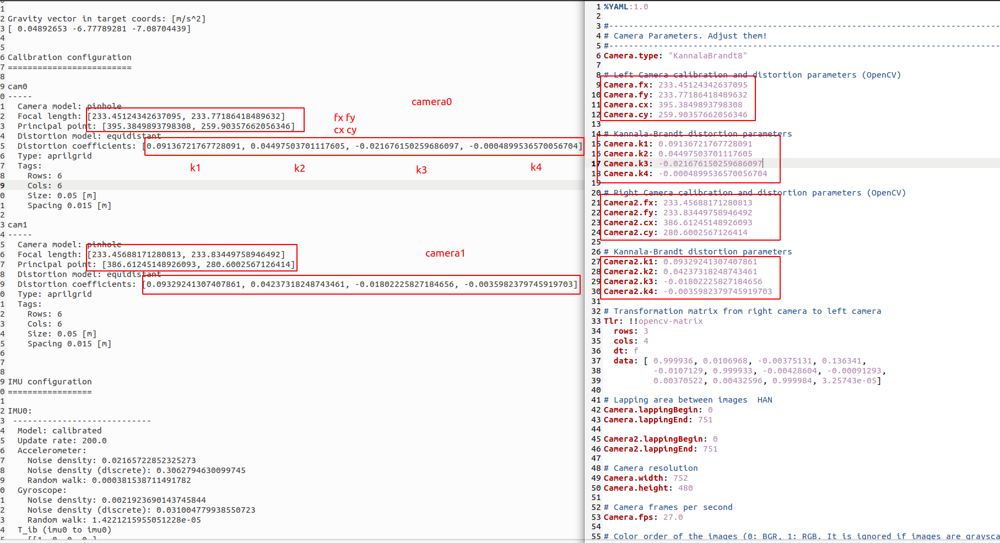
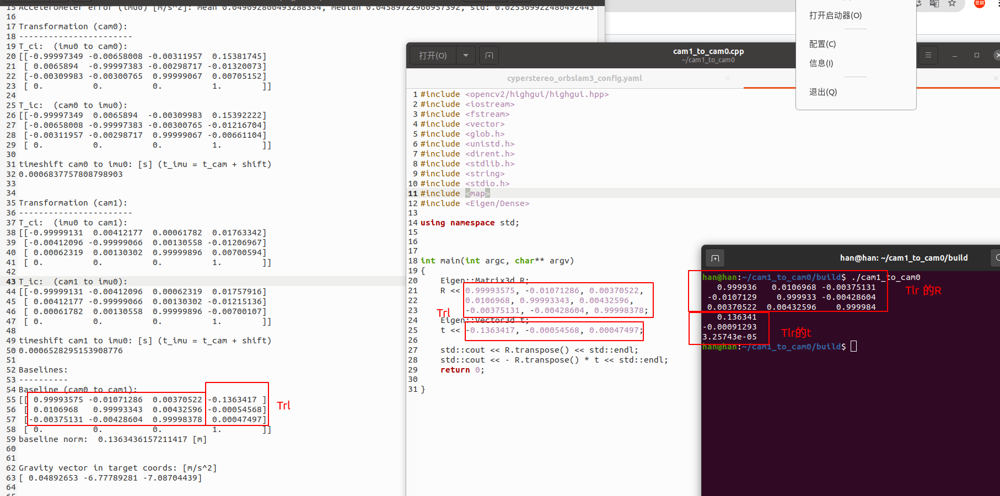
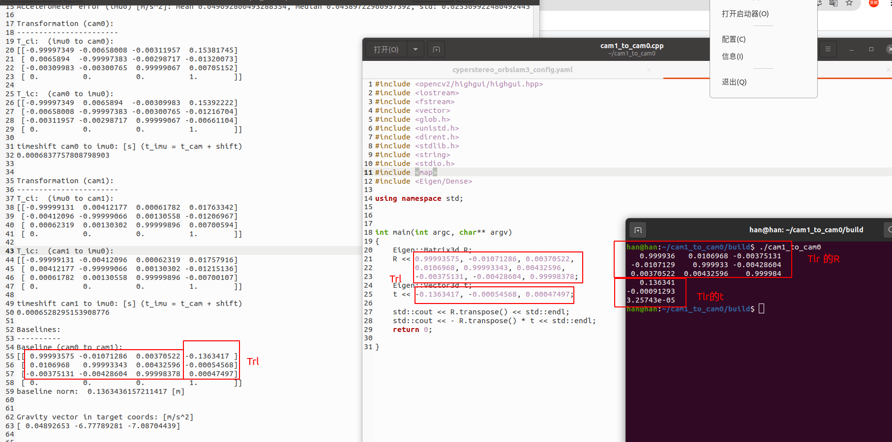
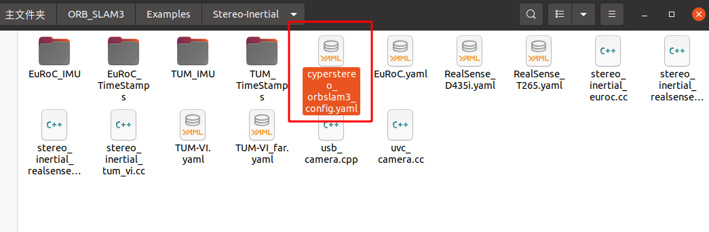

ORB_SLAM3 如何跑起来¶
在 Cyperstereo 上运行 ORB_SLAM3¶
1.将相机标定文件转换为orbslam3的配置文件
SDK的slam文件夹下提供orbslam3的通用配置文件，

如果想要更高的精度，需要根据自己相机的标定文件重新填写cyperstereo_orbslam3_config.yaml文件中的内外参， 如下图所示，将cyperstereo_imu_calibra-results-imucam.txt文件中的内外参copy到cyperstereo_orbslam3_config.yaml文件中
 


替换完成后，将cyperstereo_orbslam3_config.yaml文件放到如下路径CyperStereo文件夹内
2.运行Cyperstereo节点
cd (local path of Cyperstereo)
source ./devel/setup.bash
rosrun CyperstereoRos capture_image_imu
3.打开另一个命令行运行vins
cd (local path of vins)
source ./devel/setup.bash
rosrun ORB_SLAM3 Stereo_Inertial Vocabulary/ORBvoc.txt Examples/Stereo-Inertial/cyperstereo_orbslam3_config.yaml true